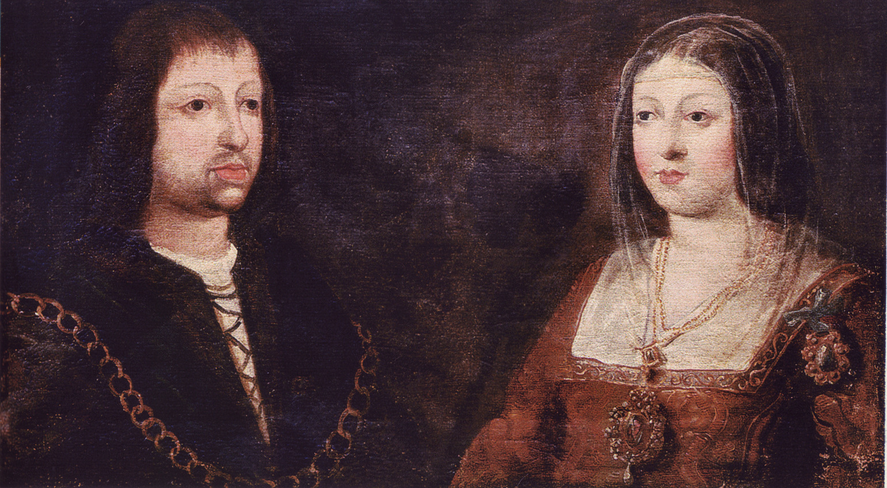
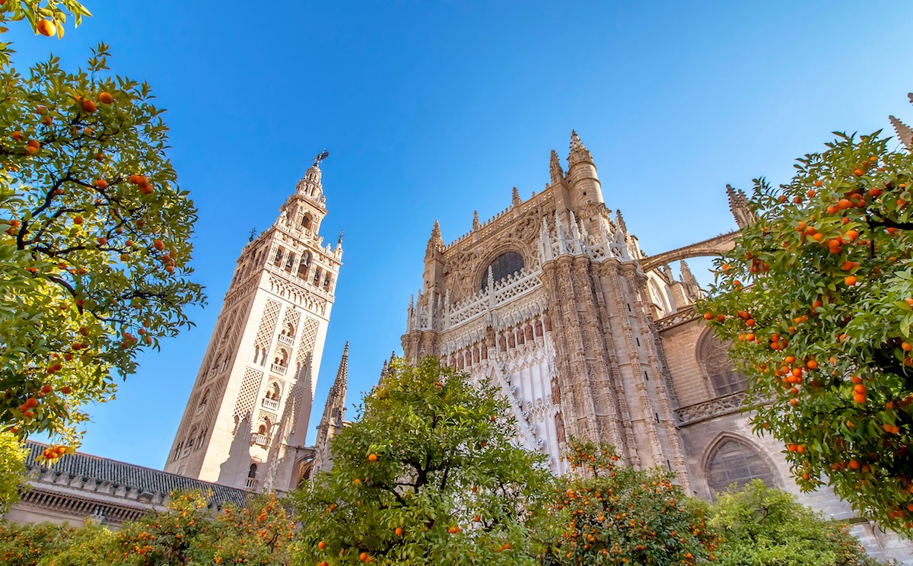

Introduction à l'Histoire Culturelle de l'Espagne
L’histoire de l’Espagne est marquée par l’influence de nombreuses civilisations. Les Romains ont laissé des infrastructures durables comme des ponts et des aqueducs, ainsi que la langue latine qui a évolué pour devenir le castillan (espagnol). Plus tard, la présence des Maures (musulmans d’Afrique du Nord) entre le 8ème et le 15ème siècle a profondément marqué la culture espagnole, notamment dans le domaine de l’architecture, de la science et de l’agriculture. Après la Reconquista (reconquête des territoires sous domination musulmane), les Rois Catholiques ont unifié le pays et lancé des explorations coloniales, faisant de l’Espagne un empire mondial. L’influence des civilisations amérindiennes, la rencontre avec les cultures africaines et l’expansion de la religion catholique ont également façonné l’identité du pays.
L'Espagne Romaine
Les Romains ont profondément influencé le développement de l’Espagne, laissant en héritage des infrastructures imposantes comme les ponts et aqueducs (comme l’aqueduc de Ségovie). Les villes de Tarragone et Mérida, où l’on trouve des vestiges de théâtres et de forums romains, sont des témoins de cette époque. La langue latine des Romains a également évolué pour donner naissance au castillan.
L'Héritage Musulman en Espagne
Du 8ème au 15ème siècle, l’Espagne a été largement sous domination maure (musulmane), ce qui a eu un impact durable sur son architecture, sa science et son agriculture. Les édifices comme l'Alhambra à Grenade ou la mosquée-cathédrale de Cordoue reflètent l’architecture islamique. Des avancées scientifiques et agricoles ont également été introduites par les Maures, dont les systèmes d’irrigation sophistiqués.
La Reconquista et l'Unification Espagnole
La Reconquista, processus de reconquête des territoires sous domination musulmane, a culminé en 1492 avec la prise de Grenade. Les Rois Catholiques, Ferdinand et Isabelle, ont unifié le pays sous le christianisme et ont initié des explorations au-delà de l’Europe. Cette période a marqué le début de l’Empire espagnol et l’expansion mondiale du catholicisme.
 L’Empire Espagnol et la Rencontre des Cultures
Au 16ème siècle, l’Espagne est devenue un empire mondial. Les expéditions coloniales vers l’Amérique ont entraîné un échange culturel entre les civilisations amérindiennes et européennes, influençant l’art, la cuisine et les traditions espagnoles. Par ailleurs, les contacts avec l’Afrique ont aussi marqué l’identité espagnole, notamment dans les traditions musicales et artistiques.
La Renaissance et l’Âge d’Or Espagnol
Le 17ème siècle a été une période de prospérité culturelle pour l'Espagne, marquée par l'essor du théâtre, de la littérature et de la peinture. Des artistes comme Diego Velázquez et des écrivains comme Cervantes (auteur de Don Quichotte) ont contribué à l'âge d’or artistique espagnol. Cette époque a consolidé le statut de l’Espagne comme centre artistique et intellectuel.